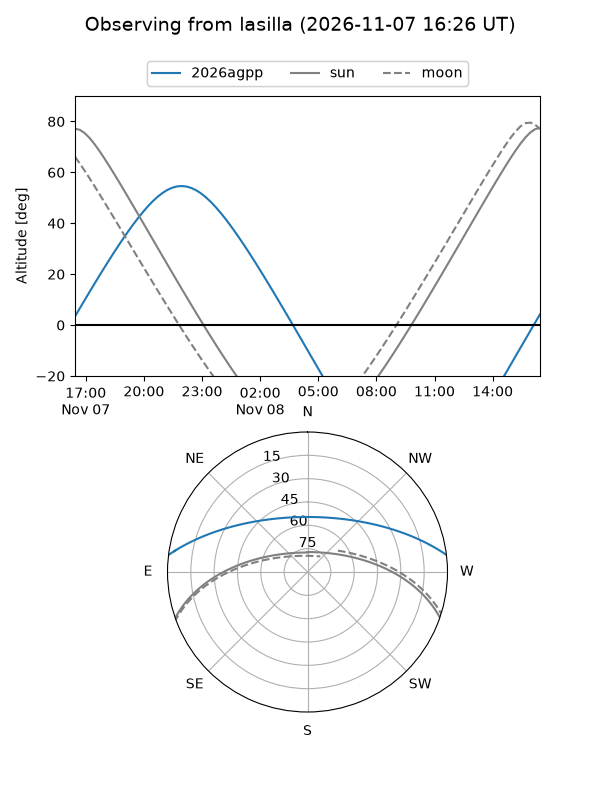
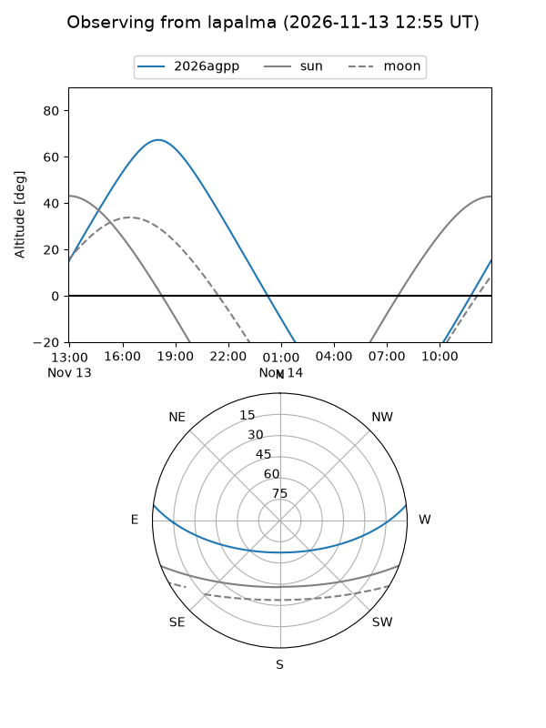
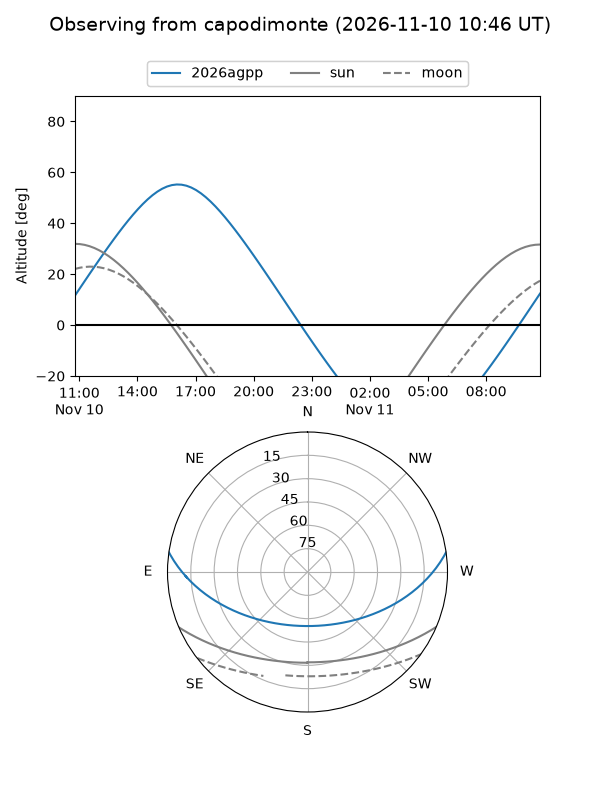
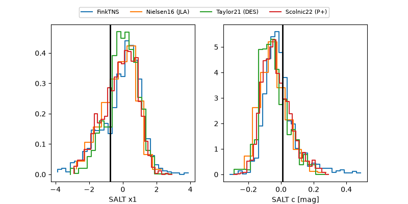

2026agpp
Target 2026agpp at 2026-11-07 04:34
Aliases and brokers:
FINK-ZTF: ztf.fink-portal.org/ZTF26acczljq
Lasair-ZTF: lasair-ztf.lsst.ac.uk/objects/ZTF26acczljq
ALeRCE-ZTF: alerce.online/object/ZTF26acczljq
YSE-PZ: ziggy.ucolick.org/yse/transient_detail/2026agpp
TNS name: wis-tns.org/object/2026agpp
Direct TNS query: direct search
alt names
ZTF26acczljq (ztf,fink_ztf)
2026agpp (tns,yse)
ATLAS26myy (atlas)
Coordinates:
equatorial (ra, dec) = 305.1271,+6.02723
equatorial (HMS+DMS) = 20:20:30.51,+06:01:38.02
galactic (l, b) = (49.0117,-16.70855)
Flags:
likely cv: !!
CV pen: 0.8209113486355425
peak dt: +4.8
Photometry:
last ztfg=18.50, ztfr=18.18
4 ztfg, 2 ztfr detections
Lightcurve
Visibility



Additional plots
